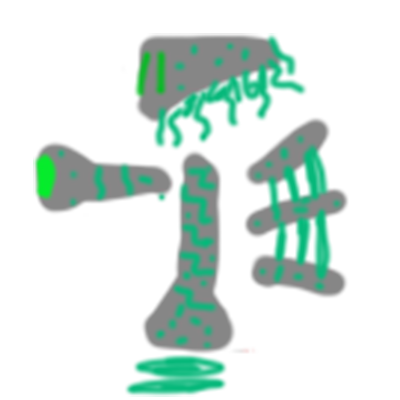
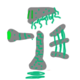
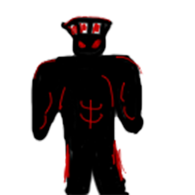
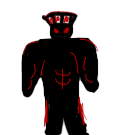

TimeLess
In this time-traveling rouge-lite shooter, you must navigate through the ruined timeline to remake it in your own image.
for PC only
The Earth has been erased from existence, along with all but a whisper of humanity. Carve a path of destruction through history to get the chance to become the GodHead. Though you may fall, the god of time is dead, so may you rise once more.
Players will choose one of four survivors to use to battle through floors of enemies from alternate histories. Learn more about the dead world, and what each survivor’s place was in it.
Each survivor has a different main attack, but they can be augmented and strengthened with many items found throughout the game.
Survivors:
-
The Heroin: Attacks with simple punches. Highest speed.
-
The Android: Uses a tesla gun to zap nearby enemies.


-
The Dark Lord: Charge up fireballs to throw at enemies.


-
The Gifted: Use telekinesis to throw enemies into one another.
Keyboard and mouse controls
Visuals will consist of semi-realistic pixel art. The game should have a somber feel to it, with slower and calmer music to not distract the player.
There should be a short tutorial, but the player will be free to explore most of the game’s mechanics by themselves.